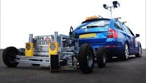
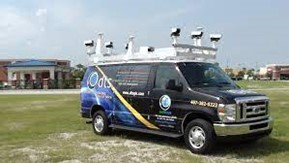
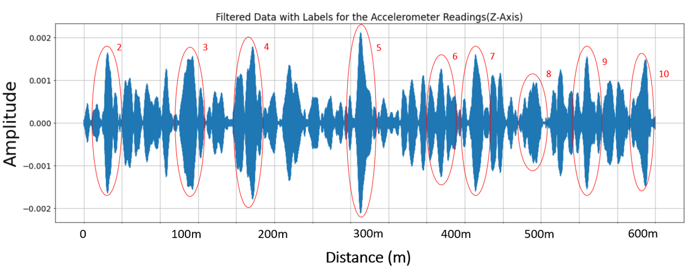
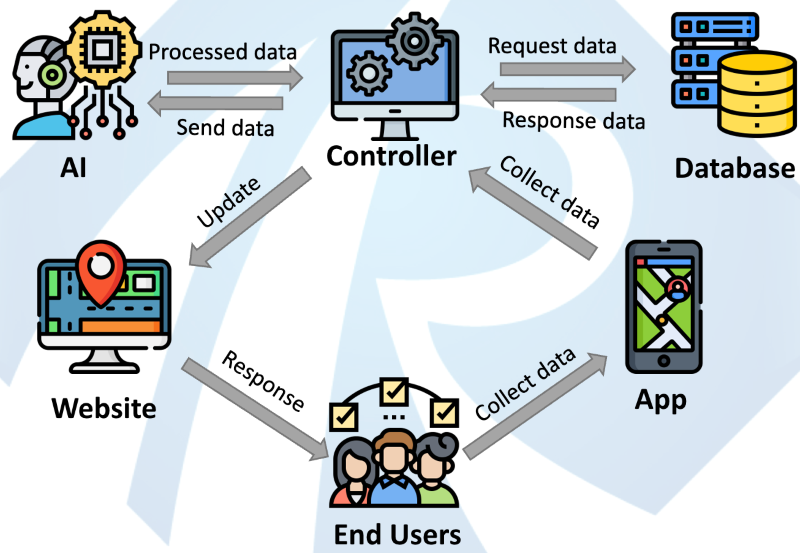

Research Background
Road pavements are subject to constant loading and environmental corrosion, resulting in inevitable deterioration over time. This leads to a growing number of substandard pavements that not only reduce the comfort of road users, but also pose safety risks to society. Additionally, as roads deteriorate, vehicles tend to consume more fuel due to increased rolling resistance, which in turn leads to higher emissions of carbon dioxide and other pollutants
-

Patching and Rutting
-

Pothole
-

Cracks
Transport Infrastructure Ireland (TII), the asset owner in Ireland, has reported spending over €1 billion in 2021 alone to bring these deteriorated roads up to standard, and this cost is expected to increase in the coming years. In fact, it is estimated that 900 kilometers of motorways in Ireland will require resurfacing in the next decade. The key reasons causing huge cost is that the current road monitoring practices highly rely on conventional specialized equipment methods, such as “bump car”, ground-penetrating radar and laser systems. Those methods are prohibitively expensive and labor-intensive, requiring manual inspections and measurements.
-

Bump Car
-

Vision based approach
-
ground-penetrating radar
Additionally, they fail to provide timely information on large-scale road networks resulting in substantially greater maintenance costs and unexpected safety /serviceability failure of the lifeline transportation network. In the face of environmental pollution, the conventional inspection methods which involve the use of special machinery and vehicles will emit significant amounts of greenhouse gases, contributing to climate change and air pollution. The use of such equipment can also cause noise pollution, which can have adverse effects on the health and well-being of nearby residents and wildlife.
What is 'RoadPhone' project
The RoadPhone project will develop a new low-cost sensing technology for semi-live road pavement monitoring using common smartphones with accelerometers and gyroscopes placed on the vehicles (e.g., shuttle buses, delivery vans, taxis and etc.).
-
Bump Car
Technically, road surface defects may cause vehicle ‘bumping’. The induced-vibration can then be captured by accelerometer and gyroscope sensors embedded in smartphones, together with satellite navigation location coordinates. The smartphone data gathered will be analysed using cutting-edge machine learning algorithms to detect road pavement defects at the community level (e.g., road network between UCC campuses). Analyzed data along with location information will be further automated into a deterioration map and visualized on a web-based GIS system to be accessed by stakeholders and road users, transforming conventional expensive road monitoring practice on a multi-year basis to semi-live monitoring & assessment at any time.
- 
The RoadPhone system will be developed for the users with minimum knowledge of smartphones and pavement structures. The proposed technology can be distributed to any regular road users with smartphones to provide instant feedbacks on the passing pavements. Based on the feedbacks, IRI reports will be generated to assist the decision making for the contractors. The road maintenance companies will no longer need to send any particular team or equipment to conduct pavement surface roughness inspections.
Project plans
The key part of the project is to train machine learning engines using vibration data to be able to not just detect the anomalies of the road pavement but also cluster the anomalies into several categories, such as manhole, porthole, patching, etc. Using GPS data that is collected along with vibration data, the clustered anomalies can be marked on a GIS system, namely anomaly map , which can be visualized on any platforms.
Stage 1
The first task of the project is to develop a smartphone application that records the vehicles’ motions sensor data and GPS data with customized sampling rate. The app, in the first stage of the project, provides the flexibilities of manipulating the data and data flow, such as collecting data with different sampling rates, removing gravity from the acceleration data, testing the accuracy of the GPS, uploading data directly to our own cloud/server. In the late stage of the project, the app will be the part of the RoadPhone system used to communicate with the road users, more details on RoadPhone App.
Having the app, the datasets, including motion sensor datasets and GPS datasets, are collected using smartphones on a designated route run by UCC shuttle bus for the ML training.
Stage 2
Having the app, the datasets, including motion sensor datasets and GPS datasets, are collected using smartphones on a designated route run by UCC shuttle bus for the ML training. One of the most challenging and the most time consuming part of the project is to clean the noises in those datasets. The noises can be caused by many sources, such as, sudden acceleration, temporary change of the route, magnetic field, vibration of the vehicle suspension, etc. Some of them can be removed by applying a data-processing layer after its collected, such as vibration of the suspension whose frequency is normally a constant throughout the whole testing period which can be removed by applying a simple butter filter. Whilst some other noises can only be detected and removed during ML training, such as sudden acceleration of the vehicle which might be treated as a new categories during the clustering. In the practice, uncertainties are always more complex than expected. The only way to reveal its mystery is to keep testing and training until it reaches the desired accuracy.
Stage 3
The last phase of the project is to develop a system that automates the whole collecting-processing-visualizing process. It can be described using a preliminary Model-View-Controller architecture as shown in Figure below.
-

RoadPhone system Model-View-Controller Architecture
Firstly, the stakeholders distribute the RoadPhone App to the regular road users, such as bus drivers, taxi driver, etc. The road users can collect data whenever they run on the roads and then upload it to the controller/database. The AI engine will then receive the raw data, process into different categories and send it back to the controller. Having processed data, a frontend/website will receive anomalies and their locations, updating the anomaly map.
RoadPhone VS other aproaches
The conventional solution indeed provides accurate results. However, its drawbacks are obvious, i.e. when it comes to enormous road networks, it becomes sluggish, costly and causing environmental pollutants. The RoadPhone system, on the other hand, perfectly overcome those issues by using AI, smartphone sensors, and automation. It has following advantages:
- Compared with conventional approaches, the cost of running RoadPhone system is negligible. The RoadPhone system only need road users to have a common smartphone with our RoadPhone App installed. Ideally, the stakeholder could distribute the app to as many road users as possible to cover more road network.
- With the RoadPhone system, road inspections will not reply on specialized equipment or staff with expertise on road engineering. The system processes motion and GPS data with cutting-edge ML model at the backend and visualized anomalies at the frontend. It is designed to be understood by non-professionals and provide high level information for road engineers at the same time.
- The fully automated system enables the stakeholders to have near real-time inspections to provide timely monitoring and reports, allowing stakeholder to capture progressively road deteriorations and to respond promptly, thus reducing the risks for road users and leading to improved long term pavement performance.
- Unlike conventional approaches, the RoadPhone system generates PSCI map with detailed road anomaly labels and ratings providing not just overall conditions of the road sections, but also information of specific anomalies on the map enabling contractors to easily locate the defects and avail decision-making for the stakeholders in the maintenance procedures.
- As the stakeholders do not need to send out special team to do inspections, there will be no extra environmental impact.